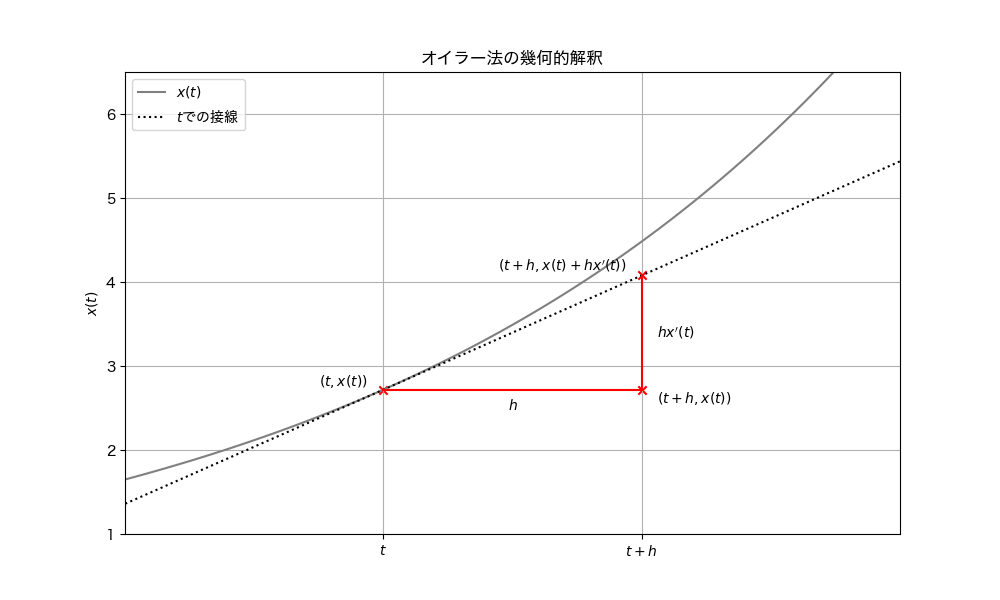

オイラー法#
オイラー法（Euler’s method） は常微分方程式における初期値問題に対する数値的解法である．具体的には，一階の常微分方程式
が与えられたときにこの方程式の解を近似的に求める方法である．
初期時刻 \(t_0\) から区間の終端 \(t_n\) までの離散的な近似列を得るためには，次の時刻の関数の値，言い換えると，初期条件から微小時間 \(h\) だけ遷移したときの関数の値 \(x(t+h)\) を外挿することが重要である．そこで，この値を近似するためにTaylor展開する．
ここで，\(x', x''\) は未知関数 \(x\) の1次，2次導関数である．ここで与えられた微分方程式と初期条件から得られる初期時刻 \(t_0\) での関数の傾き \(x'(t) = dx/dt = f(x_0,t_0)\) を利用することを考える．
関数の傾き \(x'(t)\) を活用するために 上式より2階の導関数を含む項を無視すると次の式のように，
という一次近似を行うことができる．この近似式に基づいて近似された数値列 \(x_0, \ldots, x_N\) を構築したいので，離散化された数値列 \(t_0,t_1,...,t_N\) として表記を整理すると，時刻 \(t_0\) のとき
と書くことができる．上式の右辺は初期条件と与えられた微分方程式 \(f(x,t)\) から計算できることがポイントである．同様にして，次の時刻以降も近似すると，
と近似列を求めることができる．これを一般化すると
となる．この近似法はオイラー法（Euler’s method） とよばれる数値解法アルゴリズムとして知られている．オイラー法の精度は \(O(h)\) であることが知られており，精度としては不十分な場合がある. したがって，一般的な数値解法として，使用されることはほとんどないことに注意されたい．
オイラー法の幾何的解釈#
オイラー法は以下の図に示すように幾何的に解釈できる．次の時刻 \(t+h\) の外挿をするために，時刻 \(t\) での関数の値 \(x(t)\) と微分方程式として与えられるその時刻での傾きを利用できる．刻み幅 \(h=dt\) が非常に小さいならば，関数の変化量は \(dx/dt =x'(t)\) より \(dx = h x'(t)\) なので，近似式は図に示すように，\(x(t)\) に関数の変化量を足した値になっていることがわかる．

図を見ても明らかであるように，刻み幅 \(h\) や関数の変化量が大きい場合は解析解と近似解との誤差が大きくなることに注意されたい．
オイラー法は微小時間 \(h\) だけ遷移したときの関数の値を近似するために，区間の始点（初期時刻）での導関数の値を利用して一次近似をした．オイラー法よりも正確に変化量を近似するために，始点以外の時刻の情報を用いて外挿する手法が提案されている．改良法として区間の始点・終点の平均の傾きを利用する ホイン法（Heun’s method） と区間の中点での傾きを利用する 中点法（Midpoint method） などがある．
オイラー法の実装#
これをPythonで実装する．今回は次の初期値問題を解く
この解析解は \(x(t)=e^{-t}\) であり，以下のプログラムで解析解と近似解の違いをプロットする．
import numpy as np
import matplotlib.pyplot as plt
def euler_method(f, x0, t0, tn, h):
"""
オイラー法を用いて常微分方程式を数値的に解く関数
:param f: 常微分方程式の右辺の関数 f(t, x)
:param x0: 初期値 x(t0)
:param t0: 初期時刻
:param tn: 最終時刻
:param h: 刻み幅
:return: 時刻と近似解のリスト
"""
t_values = [t0] # t_0の値を格納したリストを作成
x_values = [x0] # x_0の値（初期値）を格納したリストを作成
t = t0
x = x0
while t < tn: # 最終時刻になるまで繰り返す
# 時刻と式()に基づく値の更新
x = x + h * f(t, x)
t = t + h
# 計算された値をリストに追加
t_values.append(t)
x_values.append(x)
return t_values, x_values
# 微分方程式の右辺
def f(t, x):
return -x # 例題：dx/dt = -x
# 解析解
def analytical_solution(t):
return np.exp(-t)
# 初期値とパラメータ
x0 = 1 # 初期値
t0 = 0 # 開始時刻
tn = 2 # 終了時刻
h = 0.001 # 刻み幅
plt.figure() # グラフ描画
t_analytical = np.linspace(t0, tn, 500) # 区間[開始時刻,終了時刻]で時刻を500点サンプリング
x_analytical = analytical_solution(t_analytical) # 解析解の計算
plt.plot(t_analytical, x_analytical, label='Analytical solution') # 解析解のプロット
t_values, x_values = euler_method(f, x0, t0, tn, h) # オイラー法の計算
plt.plot(t_values, x_values, label=fr"Euler's method ($h={h}$)") # オイラー法の結果のプロット
plt.title("Euler's Method")
plt.xlabel(r'$t$')
plt.ylabel(r'$x(t)$')
plt.grid(True)
plt.legend()
plt.show()